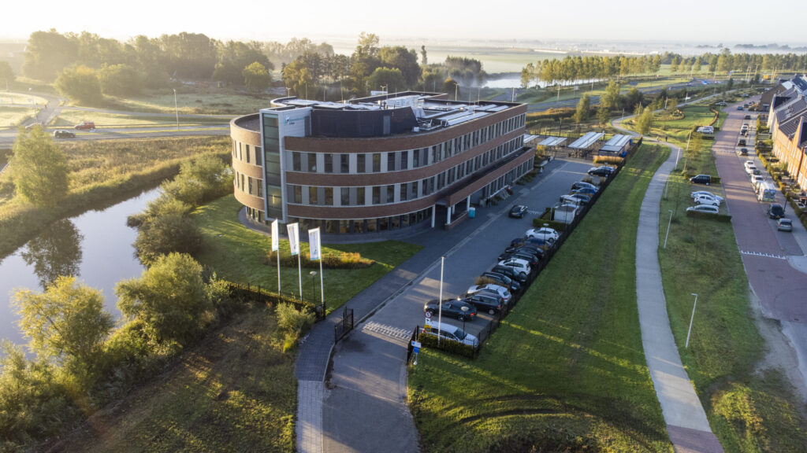

Op school vinden we geloof en goed omgaan met elkaar belangrijk.
Ontdek het Hoornbeeck College
Het Hoornbeeck College is een christelijke mbo-school. Je leert hier voor je beroep en voor later. De docenten helpen je en nemen de tijd voor je.
Je leert niet alleen uit boeken. Je leert ook samenwerken, zelf keuzes maken en problemen oplossen. Zo ben je goed voorbereid op een baan of een vervolgopleiding.

Kerninformatie
Je oefent veel in de les, tijdens projecten
Je docent en mentor helpen je met school en met je planning.
Je leert wat je nodig hebt voor een baan of een volgende opleiding.